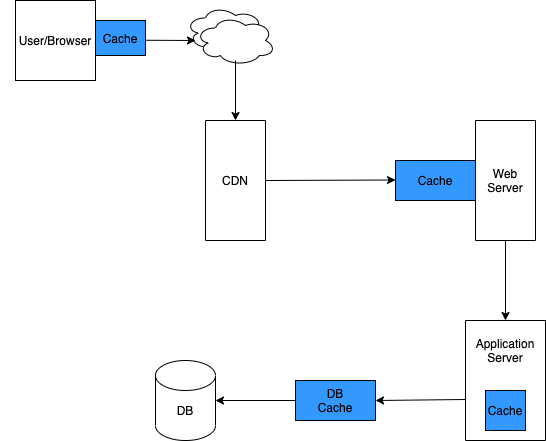

Caching at Different Components of System
This post will cover the different layers where Cache can be used.
Browser Cache
A browser cache holds all documents downloaded via HTTP by the user. This cache is used to make visited documents available for back/forward navigation, saving, viewing-as-source, etc. without requiring an additional trip to the server. It likewise improves offline browsing of cached content.
CDN
CDN acts as a layer between user and server to deliver content efficiently. It caches content (such as images, videos, or webpages) in proxy servers that are located closer to end users than origin servers. (A proxy server is a server that receives requests from clients and passes them along to other servers.) Because the servers are closer to the user making the request, a CDN is able to deliver content more quickly.
Web Server Cache
the cache simply remembers the previous requests made by the user. So when the user requests a page that he/she had visited previously, the request will be sent to the cache to retrieve the content instead of the longer route of sending the request all the way back to the origin. This means that the cached content is closer to the user, thus, resulting in quicker response time.
Example Diagram
Note: I have created this based on my understanding of different layers of cache, please let me know if there is a mistake.
Application Cache
Application caching is different from database caching. Application cache is local to application and each application server/application will have its own cache. Application caching is used to store data that does not change often and read heavy. One example is JVM cache for application cache. It is used to save data like timezones, locale etc.
Database Cache
Database cache is layer between application and database. The idea with this cache is to store data that is read more often by application. The raw response of the data is stored in cache as DB read has higher latency.